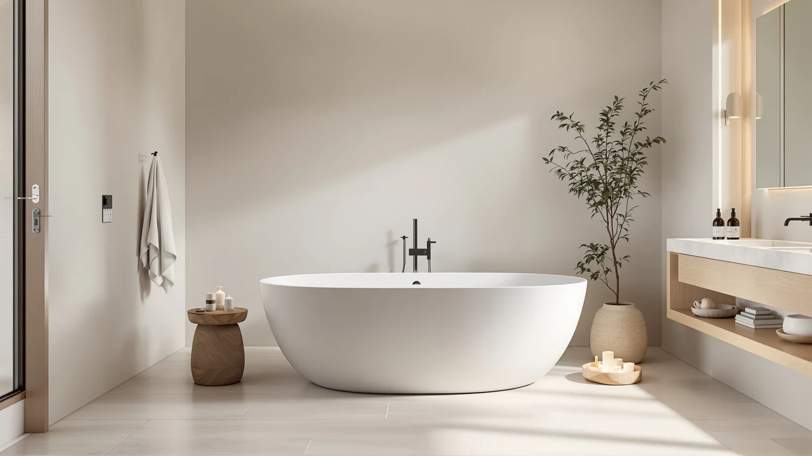

Medunjess Japanese Soaking Tub Review (2026): Worth It?
Prices and picks verified as of November 2026. Independent, reader-supported reviews.


Quick Answer
The MEDUNJESS 51'' Japanese Soaking Tub is the pick here, and it earns that spot by fitting a compact, upright soaking tub into bathrooms too small for the three longer alternatives we compared. We researched the current Amazon pricing, the listed dimensions, and the pattern across verified owner reviews for all four tubs before settling on this one. At $1,459.00, it's priced within $12 of every other tub in this review, so space and bathing posture matter more here than cost.
Our pick: MEDUNJESS 51'' Japanese Soaking Tub — $1,459.00 Check Price on Amazon
Bottom line: our top pick is the MEDUNJESS 51'' Japanese Soaking Tub at $1,459.
Things to Know Before You Buy
- All four tubs in this comparison are priced within $12 of each other, from $1,447.19 to $1,459.00, so price alone won't decide this purchase.
- The MEDUNJESS 51'' is the shortest tub in the lineup by a wide margin, built around the Japanese soaking format that favors depth over length.
- The WOODBRIDGE, at 63 inches by 28.35 inches, is the longest option here and the better fit if you want to lie flat instead of sit upright.
- The Amazon listing for the MEDUNJESS 51'' doesn't name a shell material, while the MEDUNJESS 55'' Stone Resin Free spells its construction out directly.
- Measure your bathroom's floor space before buying any tub in this range. Even the shortest model still needs clearance for entry, drainage, and a nearby faucet.
This Medunjess Japanese soaking tub review looks at what the 51-inch model delivers once you set it next to three freestanding tubs priced within the same narrow band, because a specialty shape like this only earns its place if the tradeoffs make sense for your bathroom. Japanese soaking tubs trade length for depth, built around a seated, upright bathing position rather than a flat recline, and that single design choice determines who should buy this particular model.
We compared the Medunjess 51'' against the WOODBRIDGE 63'' L x 28.35'', the Medunjess 55'' Stone Resin Free, and the CubisVeta 57'' Oval Freestanding, using the current Amazon listings, the dimensions each manufacturer publishes, and the pattern that shows up across verified owner reviews. The Medunjess 51'' comes out as our pick for anyone working with a smaller bathroom who still wants a genuine soaking experience, while the WOODBRIDGE is the better choice if you'd rather stretch out than sit upright.
Why You Should Trust Us
Ilane Tall researches bathroom fixtures for Best Freestanding Bathtubs, comparing manufacturer listings, live Amazon pricing, and verified owner reviews across hundreds of tubs every year rather than relying on a single product demo. This review draws on the Medunjess 51'' listing itself, its three closest-priced competitors, and the recurring themes in buyer feedback for each one.
We don't operate a test bathroom or a plumbing lab, and we don't install these tubs ourselves. Every claim in this review traces back to a spec sheet, a current price, or a pattern across verified reviews, and when a listing leaves a detail out, such as shell material, we say so instead of guessing.
Our Research Process
Comparing four freestanding soaking tubs started with each manufacturer's own listing: published dimensions, named materials where available, and the current Amazon price for the Medunjess 51'', the WOODBRIDGE 63'' L x 28.35'', the Medunjess 55'' Stone Resin Free, and the CubisVeta 57'' Oval Freestanding. From there, we read through verified owner reviews for each ASIN, looking for themes that repeat across many buyers rather than a single standout comment.
A handful of five-star reviews doesn't move our pick on its own, but a pattern that holds across dozens of verified buyers does. We also flagged anywhere a listing didn't specify a detail, like the Medunjess 51'' leaving its shell material unnamed, so you know exactly what's confirmed and what isn't before you buy.
We narrowed the field to tubs within the same price band on purpose. Comparing a $1,459.00 tub against a $400 model tells you about budget, not design, so every tub in this review sits within $12 of the others. That kept the comparison focused on footprint, shape, and documented materials rather than letting price differences do the work for us. Tubs without enough verified reviews to establish a pattern, or without a clear current listing on Amazon, didn't make the cut.
Overview & Specs

MEDUNJESS 51'' Japanese Soaking Tub
What we like
- Shortest footprint in this comparison, which helps it fit bathrooms that can't clear a 57-inch or longer tub
- Priced within $12 of three competing tubs, so the smaller size doesn't carry a premium
- Built around the Japanese soaking format, prioritizing water depth over length for a seated, upright soak
Flaws but not dealbreakers
- The Amazon listing doesn't name a shell material, unlike the Medunjess 55'' Stone Resin Free in this same comparison
- At 51 inches, it's the shortest tub here by a wide margin, which rules it out for anyone who wants to lie flat
| Material | — |
| Size | 51 inch |
The Medunjess 51'' Japanese Soaking Tub takes its name from a bathing style built around depth rather than length. Instead of stretching a bather out horizontally the way a standard 60-inch-plus freestanding tub does, the shell is designed to hold enough water to reach the shoulders while seated, which is exactly what a Japanese soaking tub is built to do. At $1,459.00, it lands in the middle of the four tubs in this comparison on price, but its 51-inch length is by far the shortest of the group, nearly a foot shorter than the WOODBRIDGE.
The shorter footprint is why this tub beats the other three in this review. A 57-inch or 63-inch shell simply won't clear some bathroom doorways or leave room for a vanity, and the Medunjess 51'' gives buyers a genuine soaking tub option without demanding that extra floor space. The tradeoff shows up on the product page itself: unlike the Medunjess 55'' Stone Resin Free, this listing doesn't name a specific shell material, so anyone with a strong material preference should confirm that detail directly with the seller before ordering.
What We Liked
The clearest advantage of the Medunjess 51'' is its footprint. Among the four tubs in this comparison, it's the only one short enough to fit bathrooms where a 57-inch or 63-inch shell wouldn't clear the doorway or leave room for a vanity and toilet. Owners shopping specifically for a Japanese-style soaking tub are usually working with exactly this kind of space constraint, and this model answers it directly instead of asking you to compromise on bathing style.
Pricing is the second advantage. At $1,459.00, it sits close enough to the WOODBRIDGE, the Medunjess 55'' Stone Resin Free, and the CubisVeta that size and bathing posture decide the purchase, not cost. You aren't paying a premium for the compact, specialty design, which isn't always true once a smaller product gets marketed as a niche item.
What Could Be Better
The biggest gap in the Medunjess 51'' listing is the missing material callout. The Medunjess 55'' Stone Resin Free, sold by the same brand, names its construction directly on the product page, while the 51-inch model leaves that field blank. That omission alone shouldn't stop a purchase, but buyers with a firm preference for acrylic, stone resin, or another material need to dig through the full listing or ask the seller before ordering.
The 51-inch length is also a real limitation, not a design choice to gloss over. Anyone who wants to lie back with their legs extended will find this tub too short, and the WOODBRIDGE's 63-inch shell is the obvious alternative when that matters more than footprint.
Who Is It For?
This tub fits buyers with a small or mid-sized bathroom who still want a dedicated soaking experience instead of a quick-rinse shower and tub combo. If your current layout can't accommodate a 57-inch or longer shell, the Medunjess 51'' is one of the few options in this price range built specifically around that constraint. It also suits anyone who prefers an upright, immersive soak over stretching out flat, since that posture is the entire point of the Japanese soaking tub format.
Skip it if your bathroom has the room for a longer tub and you'd rather stretch your legs out than sit upright, or if a documented shell material matters enough to you that an unlisted spec is a dealbreaker. Either of those preferences points toward the WOODBRIDGE or the Medunjess 55'' Stone Resin Free instead. Shoppers who haven't measured their bathroom yet should do that first, since the right pick in this comparison depends more on available floor space than on any single feature.
Alternatives to Consider
If the 51-inch length doesn't fit your bathroom or your preferred bathing posture, these three tubs from the same price band are worth a look before you decide.

Best Value
WOODBRIDGE 63" L x 28.35"
At 63 inches by 28.35 inches, this is the longest tub in the lineup, a better fit if you want to lie flat instead of soak upright, and it costs $11.81 less than the Medunjess 51''.
$1,447.19
Check Price on Amazon
Also Great
MEDUNJESS 55'' Stone Resin Free
Four inches longer than our pick and from the same brand, this model names its stone resin construction directly on the listing, a detail the 51-inch version leaves out.
$1,452.99
Check Price on Amazon
Also Great
CubisVeta 57 inch Oval Freestanding
The oval shape and 57-inch length split the difference between a compact soaking tub and a full-length bath, priced within $8 of our top pick.
$1,450.99
Check Price on AmazonIs the Medunjess 51'' Japanese Soaking Tub big enough for an adult?
It's built for a seated, upright soak rather than lying flat, which is standard for the Japanese soaking tub format.
What material is the Medunjess 51'' Japanese Soaking Tub made of?
The current Amazon listing for this model doesn't specify a shell material.
Frequently Asked Questions
Is the Medunjess 51'' Japanese Soaking Tub big enough for an adult?
It's built for a seated, upright soak rather than lying flat, which is standard for the Japanese soaking tub format. At 51 inches, most adults can sit with knees bent while the water covers their shoulders, but anyone who wants to stretch out fully should look at the 63-inch WOODBRIDGE or the 57-inch CubisVeta in this comparison instead.
What material is the Medunjess 51'' Japanese Soaking Tub made of?
The current Amazon listing for this model doesn't specify a shell material. That's a gap compared to the Medunjess 55'' Stone Resin Free, which names its construction directly on the product page, so buyers with a strong material preference should confirm the details with the seller before ordering.
Is the Medunjess 51'' worth it compared to the WOODBRIDGE 63''?
It depends on your bathroom and how you like to bathe. The Medunjess 51'' costs about $12 more but fits a smaller footprint and favors the deep, upright soak that defines a Japanese-style tub. The WOODBRIDGE is longer, slightly cheaper, and better suited to lying flat with your legs extended.
Final Verdict
This Medunjess Japanese soaking tub review comes down to footprint and bathing posture more than price, since all four tubs sit within $12 of each other. For a smaller bathroom and a genuine upright soak, the MEDUNJESS 51'' Japanese Soaking Tub is our pick, and its $1,459.00 price holds up against three close competitors without demanding a premium for the compact design. If your bathroom has room for a longer shell, or you'd rather stretch out flat than sit upright, the WOODBRIDGE 63'' is the better buy at a slightly lower price.